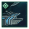

Empire Founder species
|
||||||
|---|---|---|---|---|---|---|
|
|
|
|
|
| |
|
|
|
|
|
| |
|
|
|
|
|
|
|
|
|
|
|
|
||
|
|
|
|
Console:Ships
Version
Please help with verifying or updating older sections of this article. At least some were last verified for version 3.12.
This article is for the console version of Stellaris only.
This article is for the console version of Stellaris only.
Ships
A ship is a spaceborne vessel controlled by an empire. They are the primary way of interacting with objects and entities in the galaxy via specific ship orders. Ships are classified into civilian and military vessels, the former being controlled individually while the latter form fleets. All ships must be constructed at a Starbase or Orbital ring with a shipyard module, or with  Federations enabled a Mega Shipyard or a Juggernaut. Each shipyard module can construct or upgrade one ship at a time. Ships can be repaired at any controlled, operational starbase above outpost level.
Federations enabled a Mega Shipyard or a Juggernaut. Each shipyard module can construct or upgrade one ship at a time. Ships can be repaired at any controlled, operational starbase above outpost level.
Civilian ships
Civilian ships represent all unarmed vessels of an empire and are controlled individually. Their shields, armor, and core components are automatically upgraded once the next tier component tech is unlocked at no cost, and they do not need to return to a Starbase to receive component upgrades. Each civilian ship, excluding transports, has a monthly maintenance cost of  1 energy. Construction and Science ships cost
1 energy. Construction and Science ships cost  100 alloys to build.
100 alloys to build.
Civilian ships use the evasive fleet stance by default, meaning that they will attempt to escape the system whenever a hostile fleet enters it. They can also be set to a passive stance to ignore hostile fleets.
Construction ship
Construction ships are used to build every space structure. They are not used up during construction, meaning that they can go on to do other tasks after they have finished their building project. Construction ships also have a Fleet Order that makes them build mining and research stations automatically. Construction ships can construct the following:
| Build order | Base cost | Monthly upkeep | Description |
|---|---|---|---|
| Outpost | The Starbase is a space station used to claim star systems and expand your borders. It can only be built in orbit around a star. The full cost is dependent on which star system is being claimed. | ||
| Mining Station | Mining Stations are used to collect Minerals, Energy Credits and Strategic Resources from uninhabited planets, stars and asteroids. Mining Stations that collect Energy do not cost any upkeep. | ||
| Research Station | Research Stations are used to collect Physics, Society and Engineering research data from uninhabited planets, stars and asteroids. | ||
| Observation Post | Observation Posts can be built in orbit around planets inhabited by primitive civilizations to study their society. | ||
| Megastructures are truly massive construction projects only possible in the zero-g environment of space. |
|
|
Available only with the Overlord DLC enabled. |
Tier 3 Bulwark subjects can construct Battlewright construction ships, which provide all friendly ships in the same system  5% Daily Hull Regen.
5% Daily Hull Regen.
Science ship
See also: Surveying
Science ships are the primary method of exploring the galaxy and the stars and systems within it. They require a scientist to operate.
Once crewed, the science ship can conduct a survey of individual objects within a system. During these surveys, it can discover resources present on a celestial body (i.e.: planets, stars, asteroids, etc.). A survey may also result in the discovery of an anomaly. The science ship can also investigate debris left after a space battle which may yield research points or possibly even unlock unique technology options. Crewed science ships are also required to excavate  Archaeological Sites or explore an
Archaeological Sites or explore an  Astral Rift.
Astral Rift.
|
|
Available only with the Overlord DLC enabled. |
 Tier 3 Scholarium subjects can construct Arctrellis science ships, which penalize all enemy ships with AI combat computers in the same system with −25% to
Tier 3 Scholarium subjects can construct Arctrellis science ships, which penalize all enemy ships with AI combat computers in the same system with −25% to  Accuracy,
Accuracy,  Fire Rate, and
Fire Rate, and  Ship Speed.
Ship Speed.
Colony ship
See also: Colonization
Colony ships allow an empire to settle habitable planets or megastructures in owned systems. When ordering the construction of a colony ship, the player is given the option of choosing the species or sub-species of the  pop(s) that is sent to the new colony. Pops are neither consumed nor transported in this process. Once constructed, the colony ship may be sent to any habitable world within an owned system to start a colony. Colony ships take one year to build and their upkeep cost is maintained throughout the whole colonization process. Colony ships can also be built through the interface of the world to be colonized, which automatically queues the colonization order as long as the path is not blocked. Selecting a colony ship will display the species inside.
pop(s) that is sent to the new colony. Pops are neither consumed nor transported in this process. Once constructed, the colony ship may be sent to any habitable world within an owned system to start a colony. Colony ships take one year to build and their upkeep cost is maintained throughout the whole colonization process. Colony ships can also be built through the interface of the world to be colonized, which automatically queues the colonization order as long as the path is not blocked. Selecting a colony ship will display the species inside.
Species require the Colonization Allowed species rights to be selected for new colony ships and if the species rights are changed afterwards those colony ships will not be able to colonize worlds.
The cost of a colony ship depends on the empire and its founder species class.
Empire Founder species
|
||||||
|---|---|---|---|---|---|---|
|
|
|
|
|
| |
|
|
|
|
|
| |
|
|
|
|
|
|
|
|
|
|
|
|
||
|
|
|
|

Empires with the  Corporate Dominion or
Corporate Dominion or  Private Prospectors civics can also construct Private Colony Ships, which cost
Private Prospectors civics can also construct Private Colony Ships, which cost  500 trade instead.
500 trade instead.
Empires with the  Calamitous Birth origin can also construct Lithoid Meteorites, which cost
Calamitous Birth origin can also construct Lithoid Meteorites, which cost  500 minerals instead, have no upkeep cost, and take only 150 days to build. Lithoid Meteorites also have a much faster sublight speed than regular colony ships. A planet colonized by a lithoid meteorite gains two
500 minerals instead, have no upkeep cost, and take only 150 days to build. Lithoid Meteorites also have a much faster sublight speed than regular colony ships. A planet colonized by a lithoid meteorite gains two 
 Buried Lithoids blockers and the
Buried Lithoids blockers and the 
 Lithoid Crater modifier.
Lithoid Crater modifier.
Genesis Guides Genesis Guides
Genesis Guides Astrogenesis Technologies
Astrogenesis Technologies Genesis Symbiotes
Genesis Symbiotes Genesis Architects
Genesis Architects
civics cannot construct regular colony ships, instead constructing Genesis Arks. A planet colonized by a Genesis Ark gains a species with Empires with  Synthetic Fertility origin have same cost as
Synthetic Fertility origin have same cost as  Mechanical empires.
Mechanical empires.
Empires with  Wilderness origin cannot construct colony ships, they colonize worlds by terraforming instead.
Wilderness origin cannot construct colony ships, they colonize worlds by terraforming instead.
Councilors with the 


 Frontier Spirit trait reduce the cost of colony ships by
Frontier Spirit trait reduce the cost of colony ships by  −10%.
−10%.
Transport ship
See also: Land warfare
Transport ships are the space based form of assault armies. An army embarking from a planet will automatically generate a transport ship to house it, with the option to automatically "deploy in orbit" being enabled by default on all worlds. While armies have an upkeep cost, transport ships cost no additional  energy to maintain. Transport ships are collected in fleets like military ships, but cannot be combined with military ships and are not listed in the fleet manager.
energy to maintain. Transport ships are collected in fleets like military ships, but cannot be combined with military ships and are not listed in the fleet manager.
During war, transport ships must be carefully escorted by a military fleet since they are unarmed. Their only purpose is to carry assault armies into enemy planets so that they can occupy them. Transport fleets use the passive fleet stance by default, and can be set to use the aggressive stance, which will cause them to follow a military fleet and land on enemy planets with similar or less army strength. Additionally, some special projects require a transport ship to be completed.
Military ships
See also: Space warfare
Military ships represent the armed vessels of an empire. Military ships require both  Energy and
Energy and  Alloys as monthly maintenance. Military ships have a number of base stats, but derive most of their stats from components. A military ships components can be customized via the ship designer.
Alloys as monthly maintenance. Military ships have a number of base stats, but derive most of their stats from components. A military ships components can be customized via the ship designer.
Military ships are classified by their hull size, which determines their base combat stats, base cost, and available sections. There are five regular hull sizes available: Corvette, Frigate, Destroyer, Cruiser, and Battleship; the  Apocalypse expansion adds a sixth regular hull size – the Titan. Empires with the
Apocalypse expansion adds a sixth regular hull size – the Titan. Empires with the  Progenitor Hive origin can construct more powerful Offspring versions of Corvettes, Destroyers, Cruisers and Battleships, while empires with the
Progenitor Hive origin can construct more powerful Offspring versions of Corvettes, Destroyers, Cruisers and Battleships, while empires with the  Galactic Nemesis ascension perk eventually are able to construct Menacing Corvettes, Destroyers and Cruisers.
Galactic Nemesis ascension perk eventually are able to construct Menacing Corvettes, Destroyers and Cruisers.
Titans can only be built at a Citadel-level starbase with a 
Except for Titans, each ship class has a  Voidcraft technology: Standardized <class> Patterns, which reduces
Voidcraft technology: Standardized <class> Patterns, which reduces  build cost by −5% and increases
build cost by −5% and increases  build speed by +25%. Each class also has two
build speed by +25%. Each class also has two  Voidcraft hull improvement technologies: Improved <size> Hulls and Advanced <size> Hulls, which each add
Voidcraft hull improvement technologies: Improved <size> Hulls and Advanced <size> Hulls, which each add  +10% hull points. Corvettes and Frigates share these technologies, rather than each having their own.
+10% hull points. Corvettes and Frigates share these technologies, rather than each having their own.
Some non-playable factions have access to unique hull sizes not usually available to players. Fallen Empires have Battlecruisers and Escorts, presenting an almost direct upgrade to Battleships and Corvettes respectively. Pirates, Marauders, and associated factions use Raiders, Pirate Frigates, Pirate Cruisers, and Galleons.
Upgrading ships
Whenever a design is updated, military ships of that design must be upgraded manually at a starbase or orbital ring with a shipyard module, Mega Shipyard, or Juggernaut. The cost of upgrading a ship is the difference in construction cost between the new design and the current one. If the newer design costs less of a resource than the current one, then the upgrade cost for that resource is 0: resources cannot be gained by refitting a ship. Each ship upgrades individually, with multiple ships being upgraded simultaneously if the starbase (or equivalent) contains multiple shipyards.
When upgrading a ship, the system attempts to use the current version of the same design name. If no design of the same name exists, then the upgrade process retrofits them to the most-recently saved design of the same ship class instead.
Ships obtained from events that contain components not yet researched should not be allowed to upgrade; upgrading these ships replaces the unresearched components with the latest researched ones, even if those are inferior.
Ship size
Each class of military ship uses a certain amount of naval capacity and fleet command based on its "size". The regular military ship classes have the following sizes:
| Ship class | Size | Unlocking Tech |
|---|---|---|
| 1 | ||
| Frigate | 1 | |
| 2 | ||
| 4 | ||
| 8 | ||
| 16 |
 Naval capacity represents the number of military ships that an empire can effectively support. Going beyond this limit will increase ship maintenance costs by a percentage proportional to the exceeded capacity. For example, if an empire exceeded its naval capacity by 50%, it would increase the maintenance cost of each ship by 50%. An empire's base naval capacity is 20 and is modified by the following:
Naval capacity represents the number of military ships that an empire can effectively support. Going beyond this limit will increase ship maintenance costs by a percentage proportional to the exceeded capacity. For example, if an empire exceeded its naval capacity by 50%, it would increase the maintenance cost of each ship by 50%. An empire's base naval capacity is 20 and is modified by the following:
| Naval capacity | |
|---|---|
| Source | Effect |
| +100% | |
| +50% | |
| +10%/+20%/+30%/+40%/+50% | |
| +33% | |
| +33% | |
| +33% | |
| +20% | |
| +20% | |
| +20% | |
| +15% | |
| +15% | |
| +15% | |
| +10% | |
| +10% | |
| +10% | |
| +10% | |
| −10% | |
| −15% | |
| −25% | |
| −25% | |
| −25% | |
| −30% | |
| −30% | |
| −40% | |
| −50% | |
| −10%/−25%/−40%/−60%/−80% | |
Maximum Naval Capacity may never exceed 9999 but empires can still build over it as long as their economy supports the upkeep costs.
Titans have a strict build limit, with a base of 1 allowed per empire; every 200 Naval Capacity increases an empire's Titan cap by 1, up to a maximum of 20 Titans at 3800 naval capacity.
 Offspring ships have a strict build limit too:
Offspring ships have a strict build limit too:
- Every 10 Naval Capacity increases Offspring Corvette cap by 1
- Every 20 Naval Capacity increases Offspring Destroyer cap by 1
- Every 40 Naval Capacity increases Offspring Cruiser cap by 1
- Every 80 Naval Capacity increases Offspring Battleship cap by 1
Naval coverage is equal to twice the naval capacity used and is used to calculate power projection.[2] Power projection adds  monthly influence based on the ratio of naval coverage to
monthly influence based on the ratio of naval coverage to  empire size. If naval coverage equals or exceeds empire size, power projection adds
empire size. If naval coverage equals or exceeds empire size, power projection adds  +2 monthly influence;
+2 monthly influence;  imperial authority empires gain
imperial authority empires gain  +3 monthly influence instead. If naval coverage is less than empire size, power projection is scaled by the percentage ratio. For example, with naval coverage of 50 and empire size of 100 (i.e. 50%), power projection would add
+3 monthly influence instead. If naval coverage is less than empire size, power projection is scaled by the percentage ratio. For example, with naval coverage of 50 and empire size of 100 (i.e. 50%), power projection would add  +1 monthly influence, or
+1 monthly influence, or  +1.5 monthly influence for
+1.5 monthly influence for  imperial authority.
imperial authority.
Fleet command limit
Fleet command limit determines how large any one individual fleet in an empire can be. An empire's base command limit is 20, increased by the following:
| Fleet command limit | |
|---|---|
| Source | Effect |
| +100 | |
| +20 | |
| +20 | |
| +20 | |
| +20 | |
| +20 | |
| +20 | |
(repeatable 5 times) |
+10 |
| +10 | |
| +10 | |
| +10 | |
| +10 | |
| +20 | |
Ship rank
As ships partake in battle, they will increase their rank. Ships start with zero experience. Ships gain +5 experience every day they are in combat and +0.1 experience every day they are suppressing piracy.
Ranks are classified as follows:
| Rank | Exp Points | |||
|---|---|---|---|---|
| Regular | 0-99 | 0 | 0 | 0 |
| Experienced | 100-999 | +10% | 0 | 0 |
| Veteran | 1000-9999 | +20% | +5% | +5% |
| Elite | 10000 | +40% | +10% | +10% |
Ship starting experience can be increased by the following:
| Source | Effect |
|---|---|
| +100 | |
| +100 | |
| +100 | |
| +100 | |
| +75-200 | |
| +50 per level |
Fleets
A Fleet is a group of military or transport ships operating as a single unit and can be assigned a  Commander to act as an admiral or general respectively. Military fleets each maintain a fleet template accessible through the fleet manager and can be assigned a home base to return to automatically. All ships within a fleet must remain within the same system and will synchronize their FTL methods to remain together, though ships can be merged with a fleet anywhere in the galaxy. Merging can either be performed manually between specific ships, or automatically by reinforcing a fleet with missing ships in its fleet template. Reinforcing immediately begins building the most amount of ships possible at the nearest available starbase, with ships entering transit mode to try and reach the same system as their target fleet as soon as they are finished building. Manually built military ships will instead attempt to automatically merge with any fleets in orbit around the same starbase, splitting off into a new fleet if no fleets are found or if none have sufficient fleet command limit available.
Commander to act as an admiral or general respectively. Military fleets each maintain a fleet template accessible through the fleet manager and can be assigned a home base to return to automatically. All ships within a fleet must remain within the same system and will synchronize their FTL methods to remain together, though ships can be merged with a fleet anywhere in the galaxy. Merging can either be performed manually between specific ships, or automatically by reinforcing a fleet with missing ships in its fleet template. Reinforcing immediately begins building the most amount of ships possible at the nearest available starbase, with ships entering transit mode to try and reach the same system as their target fleet as soon as they are finished building. Manually built military ships will instead attempt to automatically merge with any fleets in orbit around the same starbase, splitting off into a new fleet if no fleets are found or if none have sufficient fleet command limit available.
Colossal ships
Colossal ships are are spacecraft built on a gargantuan scale and represent the apex of an empire's economic, scientific, and military might. There are three classes of colossal ships: the Colossus, the Juggernaut, and the Star-Eater. Distinguishing them from regular ships, each Colossal Ship requires a citadel with the  Colossal Assembly Yards building to be constructed and all colossal ships apart from the Star-Eater have a hard limit on how many an empire can construct in a manner similar to megastructures, though they can be rebuilt if lost. Integrating a subject with a colossal ship in its navy will grant the ship to the overlord, bypassing the limit, however these additional ships cannot be rebuilt once lost.
Colossal Assembly Yards building to be constructed and all colossal ships apart from the Star-Eater have a hard limit on how many an empire can construct in a manner similar to megastructures, though they can be rebuilt if lost. Integrating a subject with a colossal ship in its navy will grant the ship to the overlord, bypassing the limit, however these additional ships cannot be rebuilt once lost.
Colossus
|
|
Available only with the Apocalypse DLC enabled. |
The colossus is a single-purpose weapons platform built around a Planet-Killer weapon slot, a weapon of mass destruction capable of affecting an entire planet or habitable megastructure. The technology to construct such a vessel requires the  Colossus Project ascension perk followed by an extensive research project. Each Fallen Empire has a 10% chance to start the game with a colossus and can build more if they have awakened.
Colossus Project ascension perk followed by an extensive research project. Each Fallen Empire has a 10% chance to start the game with a colossus and can build more if they have awakened.
Colossi are unable to attack enemy fleets, as they lack the weaponry to do so. During space battles, a colossus will follow direct orders and will maneuver straight to its designated target. This means that the colossus will do things such as going straight through an ongoing space battle to fire upon an enemy planet, unless its stance is set to Evasive.
An empire that owns a colossus gains the  Colossus casus belli, allowing them to declare a total war on other empires. Similarly, any other empire can use the
Colossus casus belli, allowing them to declare a total war on other empires. Similarly, any other empire can use the  Stop Colossus casus belli to declare a total war on the colossus owner. During a total war, any systems captured by either side will be immediately annexed and the war can only end in the total destruction of either side or a status quo.
Stop Colossus casus belli to declare a total war on the colossus owner. During a total war, any systems captured by either side will be immediately annexed and the war can only end in the total destruction of either side or a status quo.
- If a colossus is destroyed during a total war, nothing happens. The war is still a total war.
- If a colossus is built during a regular war, nothing happens and the colossus can be used as normal. If one side is totally destroyed by the colossus, the war ends and the war goal is not enforced. The same is true if an empire that owns a colossus is dragged into a regular war, such as due to
 federation or
federation or  defensive pact.
defensive pact.
Using a colossus causes large amounts of  war exhaustion on the targeted empire, and gives it +50% ethics attraction towards
war exhaustion on the targeted empire, and gives it +50% ethics attraction towards  Militarist and
Militarist and  Xenophobe, allowing the diplomatic and political climate of a region to grow increasingly hostile over time.
Xenophobe, allowing the diplomatic and political climate of a region to grow increasingly hostile over time.
The  Colossus Project ascension perk grants access to a special project which unlocks both the ship and one weapon. After the special project is halfway completed, the empire is prompted to choose a starting colossus weapon from those they could research (except Deluge Machine). The empire can later research other types of colossus weapons and retrofit it into their colossus via the ship designer.
Colossus Project ascension perk grants access to a special project which unlocks both the ship and one weapon. After the special project is halfway completed, the empire is prompted to choose a starting colossus weapon from those they could research (except Deluge Machine). The empire can later research other types of colossus weapons and retrofit it into their colossus via the ship designer.
Colossus weapons can only target planets, ringworlds and habitats. Targeting a planet with a pre-FTL civilization requires the Aggressive Interference Native Interference policy.
A colossus can carry the following weapons:
| Weapon | Effects | Opinion when used (stacks up to 5x) | Requirements for research | Notes | |
|---|---|---|---|---|---|

|
Global Pacifier |
|
|
If used on a | |

|
World Cracker |
|
|
| |

|
Neutron Sweep |
|
|
|
|

|
Divine Enforcer |
|
|
|
|

|
Nanobot Diffuser |
|
|
Can be used on pre-FTL worlds but will give | |

|
Devolving Beam |
|
|
| |

|
Deluge Machine |
|
|
|
Unique colossi
Certain colossus ships may be fought during the game and obtained after defeating them. They do not count towards the single-colossus limit and unlike the constructed version they are armed.
 The Toxic Entity is a guardian created at the end of the
The Toxic Entity is a guardian created at the end of the  Knights of the Toxic God story. If the empire with the origin defeats it, it will gain the option to take control of the colossus. The colossus has a weapon that turns habitable planets into
Knights of the Toxic God story. If the empire with the origin defeats it, it will gain the option to take control of the colossus. The colossus has a weapon that turns habitable planets into  Toxic Worlds with the
Toxic Worlds with the 
 Toxic Terraforming Candidate modifier and causes the same
Toxic Terraforming Candidate modifier and causes the same  Opinion penalties as World Crackers.
Opinion penalties as World Crackers. Cetana's Colossus is used by the Synthetic Queen crisis and can be obtained by defeating her via the Shroud option. It uses a
Cetana's Colossus is used by the Synthetic Queen crisis and can be obtained by defeating her via the Shroud option. It uses a  World Cracker and has the biggest component loadout in the game.
World Cracker and has the biggest component loadout in the game.
Juggernaut

{kind=link}
{kind=link}
{kind=link}
{kind=link}
{kind=link}
{kind=link}
{kind=link}
|
|
Available only with the Federations DLC enabled. |
The Juggernaut is the mobile center of operations of an entire empire, equipped with shipyards that can construct, repair, and upgrade ships the same way a starbase can. It has 10 times the hull points of a Titan and features six  Hangar slots and two turreted
Hangar slots and two turreted  Extra Large slots. It also has its own set of aura components, which are significantly more powerful than the Titan's auras.
Extra Large slots. It also has its own set of aura components, which are significantly more powerful than the Titan's auras.
Juggernauts have two shipyards and can thus build or upgrade up to two ships at a time. It cannot build Titans or colossal ships, but it can upgrade or repair them. It can also upgrade itself, or upgrade at any shipyard if its own shipyards are busy.
The Juggernaut will automatically start repairing itself after a battle like most stations, and it neither can nor needs to be repaired at a starbase.
Juggernauts can retreat and go Missing in Action to reappear at the nearest friendly starbase like all regular fleets. Fleets can set a Juggernaut as their homebase, though the target location of a "return to homebase", "repair", or "upgrade" order will fail to update in real time if the Juggernaut is still in motion.
Federation fleets, the Galactic Defense Force, and the Imperial Armada can all have a Juggernaut each, which will consume 32 naval capacity on top of filling out the navy's single-Juggernaut cap. This makes three the most amount of renewable Juggernauts available to a single empire, if they are both the president of a Federation and the Galactic Custodian and have passed Federation navy contribution and Galactic Defense Force resolution respectively. Forming the Galactic Imperium will kick the player from their federation, negating the Juggernaut they can gain from the Federation fleet.
Fallen Empires spawn with the Juggernaut technology but do not have access to the single-Juggernaut cap and cannot build them.
Star-Eater
{kind=link}
|
|
Available only with the Nemesis DLC enabled. |
The Star-Eater is a massive superweapon used by the Crisis Aspirant after reaching the fifth tier of the  Galactic Nemesis progression level and declaring war against the Galaxy as an
Galactic Nemesis progression level and declaring war against the Galaxy as an  Existential Threat. the main weapon of a Star-Eater is a Star Cracker that targets the core of a star, collapsing the celestial body into a black hole and destroying the surrounding solar system while collecting massive amounts of
Existential Threat. the main weapon of a Star-Eater is a Star Cracker that targets the core of a star, collapsing the celestial body into a black hole and destroying the surrounding solar system while collecting massive amounts of  dark matter to fuel the Aetherophasic Engine. Reaching the final crisis level grants the Crisis Aspirant two Star-Eaters as well as the technology to build more. Unlike Colossi, Star-Eaters are equipped with regular weapon slots and therefore can engage in regular fleet combat and will always cost an unchanging amount of dark matter to build regardless of the design. Star-Eaters do not require components to be fully powered in order to save a design.
dark matter to fuel the Aetherophasic Engine. Reaching the final crisis level grants the Crisis Aspirant two Star-Eaters as well as the technology to build more. Unlike Colossi, Star-Eaters are equipped with regular weapon slots and therefore can engage in regular fleet combat and will always cost an unchanging amount of dark matter to build regardless of the design. Star-Eaters do not require components to be fully powered in order to save a design.
All fleets present (including other non-firing Star-Eaters) except the firing Star-Eater will go MIA. If a system contains multiple stars, firing upon any of them destroys all stars in the system. Cracking a star grants dark matter based on the galaxy size:
| Galaxy size | |
|---|---|
| Tiny | 3000 |
| Small | 2500 |
| Medium | 2000 |
| Large | 1500 |
| Huge | 1000 |
Shipsets
Shipsets are a single visual and audio theme shared between all spacecraft built by a given empire, with fifteen playable shipsets consisting of twelve representing each of the organic species phenotypes, two sets representing  Cybernetic or Machine empires, and an
Cybernetic or Machine empires, and an  Imperial set representing the Galactic Community. The shipset choice can be customized during empire creation, but unlike namesets will be forgotten by any empires founded by the same species. Randomly generated empires will always match their shipset to their phenotype, similar to namesets or Machine portraits, however the Humanoid phenotype will default to Mammalian ships if the
Imperial set representing the Galactic Community. The shipset choice can be customized during empire creation, but unlike namesets will be forgotten by any empires founded by the same species. Randomly generated empires will always match their shipset to their phenotype, similar to namesets or Machine portraits, however the Humanoid phenotype will default to Mammalian ships if the  Humanoids DLC is not installed. The Imperial set will always be used by both the Galactic Defense Force and by the Imperial Armada, but will never spawn on a naturally generated empire. Starbases, stations, Juggernauts, and Colossi have unique models and effects for each set, while Star Eaters and megastructures instead apply a shipset skin over the base model.
Humanoids DLC is not installed. The Imperial set will always be used by both the Galactic Defense Force and by the Imperial Armada, but will never spawn on a naturally generated empire. Starbases, stations, Juggernauts, and Colossi have unique models and effects for each set, while Star Eaters and megastructures instead apply a shipset skin over the base model.
Crisis, Fallen Empire, and Pirate ships act as separate shipsets not normally available to the player. The Marauders will use the Pirate shipset, however the Great Horde will use Mammalian models as a fallback for civilian vessels not included in the set. The player can build and use Pirate and Fallen Empire ships in addition to their normal shipset if they choose the Nemesis or Cosmogenesis crisis path respectively.
Cloaking
|
|
Available only with the First Contact DLC enabled. |
Cloaking allows a fleet to become invisible and ignore closed borders and will not become MIA if war is declared against the system's current owner. It also allows a Science Ship to conduct  Active Reconnaissance. However most cloaking components will disable shields and even the ones that don't impose certain restrictions on shields. A ship can only cloak every 120 days and will automatically decloak if attacking. Ships and fleets that are cloaked are marked with horizontal stripes on the galaxy map.
Active Reconnaissance. However most cloaking components will disable shields and even the ones that don't impose certain restrictions on shields. A ship can only cloak every 120 days and will automatically decloak if attacking. Ships and fleets that are cloaked are marked with horizontal stripes on the galaxy map.
Each ship has a  Cloaking Strength, and each fleet has a
Cloaking Strength, and each fleet has a  Cloaking Strength determined by the lowest one of all ships in the fleet. It determines what penalties a fleet will suffer while cloaked as well as how easy it is to detect.
Cloaking Strength determined by the lowest one of all ships in the fleet. It determines what penalties a fleet will suffer while cloaked as well as how easy it is to detect.
| Cloaking Strength | Description | ||
|---|---|---|---|
| Non-Existent | Cannot cloak | Cannot cloak | This fleet is incapable of projecting a Cloaking Field. |
| Very Low (1) | −50% | +125% | This fleet is capable of projecting a severely unstable Cloaking Field, with significant limitations of Sublight Speed and Hyper Jump Charge Time. |
| Low (2) | −40% | +100% | This fleet is capable of projecting an unstable Cloaking Field, with major limitations of Sublight Speed and Hyper Jump Charge Time. |
| Medium (3) | −30% | +75% | This fleet is capable of projecting a Cloaking Field of normal stability, with some limitations of Sublight Speed and Hyper Jump Charge Time. |
| High (4) | −20% | +50% | This fleet is capable of projecting a high stability Cloaking Field, with minor limitations of Sublight Speed and Hyper Jump Charge Time. |
|
Very High (5) |
−10% | +25% | This fleet is capable of projecting an incredibly stable Cloaking Field, with insignificant limitations of Sublight Speed and Hyper Jump Charge Time. |
| Exceptional 6+ | No penalty | No penalty | This fleet is capable of projecting an exceptionally stable Cloaking Field, without any limitations of Sublight Speed and Hyper Jump Charge Time. |
 Cloaking Strength can be increased by the following, up to the maximum of 10:
Cloaking Strength can be increased by the following, up to the maximum of 10:
- +1-5 by cloaking ship
 Auxiliary components, depending on the size of the ship and the level of the component. A ship without a cloaking device can't cloak, even if it would gain additional strength from other sources.
Auxiliary components, depending on the size of the ship and the level of the component. A ship without a cloaking device can't cloak, even if it would gain additional strength from other sources. - +1 from finishing the
 Subterfuge tradition tree.
Subterfuge tradition tree. - +1 from the


 Trickster admiral trait.
Trickster admiral trait. - +1 from the Obsidian Veil dark matter edict (Only with
 Astral Planes DLC enabled).
Astral Planes DLC enabled). - +1 from the Astral Cloaking edict (Only with Astral Planes DLC enabled).
- +1 from the
 Material Liberator admiral trait (Only with
Material Liberator admiral trait (Only with  Galactic Paragons DLC enabled).
Galactic Paragons DLC enabled). - +2 from the
 Guerilla Tactician destiny trait (Only with Galactic Paragons DLC enabled).
Guerilla Tactician destiny trait (Only with Galactic Paragons DLC enabled). - +1 from the
 Criminal Heritage civic.
Criminal Heritage civic. - +2 from the
 Enigmatic Engineering ascension perk.
Enigmatic Engineering ascension perk. - +2 from forming a covenant with Whisperers in the Void.
- +3 if the fleet is inside a Nebula.
A cloaked fleet will be detected if it is within the sensor range of a starbase with  Detection Strength higher than or equal to the fleet's
Detection Strength higher than or equal to the fleet's  Cloaking Strength, or the empires have max
Cloaking Strength, or the empires have max  Intel on the cloaked fleet owner, or have sensor link with an empire that detected the fleet. Non-allies cloaked fleets, once detected, are forced to decloak in border.
Intel on the cloaked fleet owner, or have sensor link with an empire that detected the fleet. Non-allies cloaked fleets, once detected, are forced to decloak in border.
References
Game concepts
| Exploration | Exploration • FTL • Unique systems • L-Cluster • Pre-FTL species • Fallen empire • Spaceborne aliens • Enclaves • Guardians • Marauders • Caravaneers |
| Celestial bodies | Celestial body • Colonization • Planetary features • Planet modifiers |
| Discovery | Discovery • Anomaly • Archaeological site • Astral rift • Relics • Collection |
| Species | Species • Pop modification • Biological traits • Machine traits • Population • Species rights • Ethics |
| Leaders | Leader • Common leader traits • Commander traits • Official traits • Scientist traits • Paragons |
| Governance | Empire • Origin • Government • Civics • Council • Policies • Edicts • Factions • Traditions • Ascension perks • Ambition • Situations |
| Economy | Resources • Planetary management • Districts • Jobs • Designation • Trade • Megastructures • Waystation |
| Buildings | Planet capital • Common buildings • Planet unique • Empire unique • Holdings |
| Ships | Ship • Arkship • Ship designer • Core components • Weapon components • Utility components • Mutations • Offensive mutations |
| Technology | Technology • Physics research • Society research • Engineering research |
| Diplomacy | Diplomacy • Relations • Galactic community • Federations • Subject empires • Intelligence • Contracts • AI personalities |
| Warfare | Warfare • Space warfare • Land warfare • Starbase • Crisis |
| Others | Events • The Shroud • Preset empires • AI players • Stat modifiers • Console commands • Easter eggs |